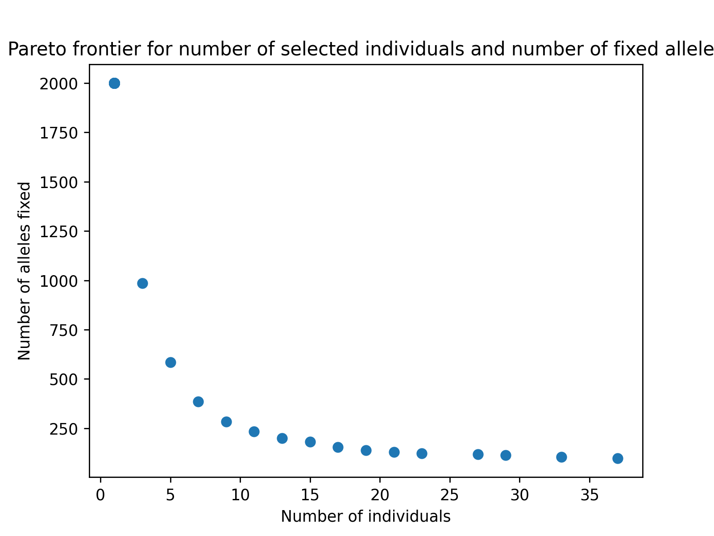

Custom Bi-Objective Germplasm Panel Reduction Pareto Frontier Visualization#
In some breeding and/or germplasm maintenance scenarios, it may be desirable to reduce the number of individuals in a panel to a representative subset and discard the rest. In these types of scenarios we may seek to minimize the number of selected individuals while minimizing the loss of genetic diversity. This type of optimization can be classified as a binary optimization problem where our decision vectors can be represented as 1 or 0 for whether the individual is selected or not selected, respectively. We may desire to see a trade-off frontier of options from which we can make germplasm selection decisions. In the following two examples, we demonstrate how to specify custom optimization problems and visualize the results.
Preliminaries#
Loading Required Modules and Seeding the global PRNG#
To begin, we import the modules we will be using into the Python namespace. To make our simulation replicable, we set the seed for the simulation using the seed function in the pybrops.core.random.prng module. This seeds the Python random and NumPy numpy.random modules with a single seed. We’ll also want to import matplotlib to create images.
# import libraries
from typing import Tuple
import numpy
from matplotlib import pyplot
import pybrops
from pybrops.opt.algo.NSGA2BinaryGeneticAlgorithm import NSGA2BinaryGeneticAlgorithm
from pybrops.opt.prob.BinaryProblem import BinaryProblem
from pybrops.popgen.gmat.DenseGenotypeMatrix import DenseGenotypeMatrix
from pybrops.popgen.cmat.DenseMolecularCoancestryMatrix import DenseMolecularCoancestryMatrix
# seed python random and numpy random
pybrops.core.random.prng.seed(194711822)
Loading Genotypic Data from a VCF File#
Next, we load our genotypic data from a VCF file named "widiv_2000SNPs.vcf.gz" using the from_vcf class method in the DenseGenotypeMatrix class. This creates an unphased genotype matrix with our SNPs coded as 0, 1, and 2. We automatically sort and group the genetic variants in the genotype matrix based on their chromosome assignments and physical positions using the auto_group_vrnt = True option. For these examples, we select the first 100 individuals to reduce the computational time to run this example.
# read unphased genetic markers from a vcf file
gmat = DenseGenotypeMatrix.from_vcf(
"widiv_2000SNPs.vcf.gz", # file name to load
auto_group_vrnt = True, # automatically sort and group variants
)
# get the first 100 taxa to keep the problem small
gmat_reduced = gmat.select_taxa(numpy.arange(100))
Scenario 2: Minimize number of individuals and loss of alleles#
In this second approach to the germplasm panel reduction problem, we propose two objectives: the number of selected individuals (as in the previous scenario) and the number of loci which have become fixed. We seek to minimize both objectives.
Defining a Custom Problem Class for Scenario 2#
Once again, we define a germplasm panel reduction class which inherits from the BinaryProblem class since the germplasm panel reduction problem decision space is binary. We override the evalfn method and provide code which will calculate our objectives.
# define germplasm panel reduction problem definition class
class GermplasmPanelReduction2(BinaryProblem):
# class constructor
def __init__(
self,
X: numpy.ndarray,
**kwargs: dict
) -> None:
"""
Constructor for the germplasm panel reduction problem:
Objective 1: minimize the number of individuals selected
Objective 2: minimize the number of fixed markers
Inequality constraint 1: there must be at least one individual selected
Parameters
----------
X : numpy.ndarray
Genotype matrix of shape (nindiv,nmarker).
"""
self.X = X
ndecn = len(X)
decn_space_lower = numpy.repeat(0, ndecn)
decn_space_upper = numpy.repeat(1, ndecn)
decn_space = numpy.stack([decn_space_lower,decn_space_upper])
super().__init__(
ndecn = ndecn,
decn_space = decn_space,
decn_space_lower = decn_space_lower,
decn_space_upper = decn_space_upper,
nobj = 2,
nineqcv = 1,
**kwargs
)
### method required by PyBrOpS interface ###
def evalfn(
self,
x: numpy.ndarray,
*args: tuple,
**kwargs: dict
) -> Tuple[numpy.ndarray,numpy.ndarray,numpy.ndarray]:
"""
Evaluate a candidate solution for the given Problem.
This calculates three vectors which are to be minimized:
.. math::
\\mathbf{v_{obj}} = \\mathbf{w_{obj} \\odot F_{obj}(x)} \\
\\mathbf{v_{ineqcv}} = \\mathbf{w_{ineqcv} \\odot G_{ineqcv}(x)} \\
\\mathbf{v_{eqcv}} = \\mathbf{w_{eqcv} \\odot H_{eqcv}(x)}
Parameters
----------
x : numpy.ndarray
A candidate solution vector of shape ``(ndecn,)``.
args : tuple
Additional non-keyword arguments.
kwargs : dict
Additional keyword arguments.
Returns
-------
out : tuple
A tuple ``(obj, ineqcv, eqcv)``.
Where:
- ``obj`` is a numpy.ndarray of shape ``(nobj,)`` that contains
objective function evaluations.
- ``ineqcv`` is a numpy.ndarray of shape ``(nineqcv,)`` that contains
inequality constraint violation values.
- ``eqcv`` is a numpy.ndarray of shape ``(neqcv,)`` that contains
equality constraint violation values.
"""
# calculate sum(x)
xsum = x.sum()
# if sum(x) ~== 0, then set to 1
denom = xsum if abs(xsum) >= 1e-10 else 1.0
# scale x to have a sum of 1 (contribution)
# (n,) -> (n,)
contrib = (1.0 / denom) * x
# convert sum(x) to ndarray
# scalar -> (1,)
f1 = numpy.array([xsum], dtype = float)
# calculate allele frequencies
# (n,) @ (n,p) -> (p,)
p = contrib @ self.X
# find alleles that are fixed approximately
mask = numpy.bitwise_or(p < 1e-10, p > 1-1e-10)
# sum the mask
# (p,) -> (1,)
f2 = mask.sum(dtype = float, keepdims = True)
# concatenate objective function evaluations
# (1,) concat (1,) -> (2,)
obj = self.obj_wt * numpy.concatenate([f1,f2])
# calculate inequality constraint violations
# (1,)
ineqcv = self.ineqcv_wt * (f1 <= 0.0).astype(float)
# calculate equality constraint violations
eqcv = self.eqcv_wt * numpy.zeros(self.neqcv)
# return (2,), (1,), (0,)
return obj, ineqcv, eqcv
### method required by PyMOO interface ###
# use default ``_evaluate`` method which uses the ``evalfn`` method
Extracting a Genotype Matrix as a NumPy Array#
Next, we extract a genotype matrix as a raw NumPy array so we can construct a GermplasmPanelReduction2 object.
# get genotype matrix
X = gmat_reduced.mat_asformat("{0,1,2}")
Constructing a Germplasm Panel Reduction Problem Object#
Next, we construct the germplasm panel reduction problem object using the raw NumPy genotype matrix.
# construct optimization problem
prob = GermplasmPanelReduction2(X)
Constructing a Custom Genetic Algorithm Object#
Next, we construct a custom NSGA-II genetic algorithm object to solve this problem.
# construct NSGA-II object
# this problem is complex and requires many generations
moea = NSGA2BinaryGeneticAlgorithm(
ngen = 2000,
pop_size = 100,
)
Estimating the Pareto Frontier#
After creating an algorithm object, we minimize the germplasm panel reduction problem and receive a solution.
# minimize the optimization problem
soln = moea.minimize(prob)
Visualizing the Pareto Frontier with matplotlib#
Finally, we can use matplotlib or any other plotting packages to visualize the results of the optimization. The code below creates a figure to visualize the estimated Pareto frontier.
# create static figure
fig = pyplot.figure()
ax = pyplot.axes()
ax.scatter(soln.soln_obj[:,0], soln.soln_obj[:,1])
ax.set_title("Pareto frontier for number of selected individuals and number of fixed alleles")
ax.set_xlabel("Number of individuals")
ax.set_ylabel("Number of alleles fixed")
pyplot.savefig("germplasm_panel_reduction2.png", dpi = 250)
pyplot.close(fig)
Below is the resulting figure:
